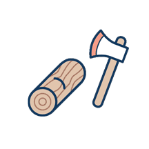

<a class="grid-block well well-anchor" href="/development/">
  
  <div class="grid-block vertical">
    <p class="p">
      <strong class="strong">Next: Development</strong>
      <br>Your environments on Runnable are always
      <br class="hidden-xxs">ready as you work.
    <div class="a strong">How development works on Runnable
      <svg class="icons icons-chevron-right">
        <use xlink:href="#icons-chevron-right">
      </svg>
    </div>
  </div>
</a>